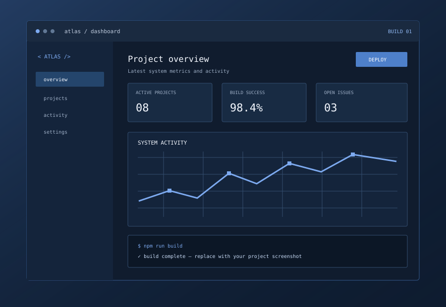
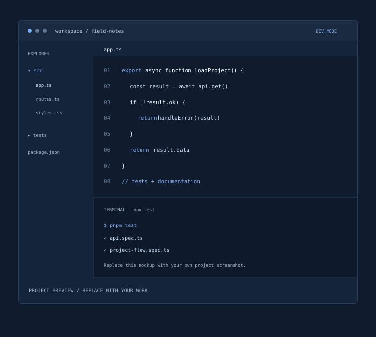
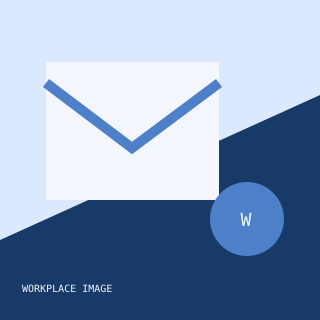
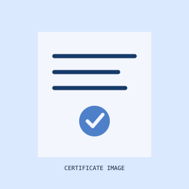
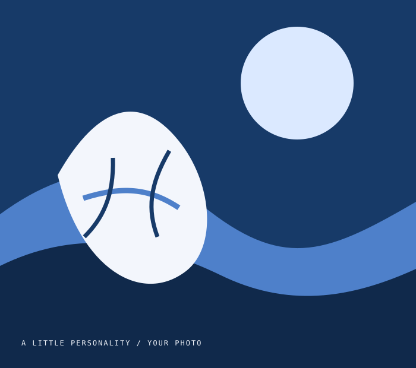

Readable, maintainable code
[Add how you keep your work clear and reliable.]
Software developer // [Your city]
Hello, I’m [Your name] — a software developer working with [your languages, tools, or areas of focus]. I care about readable code and useful outcomes.
Understand the problem. Then choose the right tools.
[Write a short, personal introduction here. Share what drew you to software, how you like to work, and the kind of problems you enjoy solving. Keep it in your own voice.]
I work in small, reviewable steps: understand the constraints, build a useful first version, test it, then improve it.
Discuss a project[Add how you keep your work clear and reliable.]
[Describe how you break complex problems into useful steps.]
[Share how you work with teammates and explain decisions.]
[Share how you check your work and reduce regressions.]
[Describe how you compare options and make trade-offs.]
[Describe how you build skills and learn from challenges.]
[Share how you coordinate work and incorporate feedback.]
[Describe how you improve usability and catch edge cases.]
[Share how you ship in small steps and improve over time.]
Projects, experiments, and tools.
[Replace these placeholders with your own work.]

[A concise description of the challenge, your contribution, and what makes this project meaningful.]

[Describe the people this was for and the part you played in bringing it to life.]
More projects, code, and experiments.
Ask me about a buildThere’s always another good thing to learn.
[Your role] · [City, Region]
[Add a sentence about your work, your team, or what you’re learning. Include details you’re comfortable sharing.]
Visit workplace
[School or institution] · [Location]
[Share what you studied or a skill you developed.]
[Awarding institution] · [Location]
[Add a brief note about this qualification, a specialization, or what you learned.]

[Team or organization] · [Location]
[Describe the work, your role, or what you learned.]
[School or platform] · [Location]
[Describe a subject or skill you developed.]
[Your role] · [City, Region]
[Describe your responsibilities or a contribution.]
[Awarding institution] · [Location]
[Add a brief note about what you learned.]
[Team or organization] · [Location]
[Describe the project and your part in it.]
[Organization] · [Location]
[Share a skill or insight from this experience.]

PERSONAL LOG / 04[Tell people what you love doing away from work. A hobby, a ritual, a place you return to — something that feels like you.]
Lately: [a book, a trail, a tiny obsession]
Trade recommendations?For project questions, collaboration, or a technical conversation.
hello@example.com [Replace with your email]